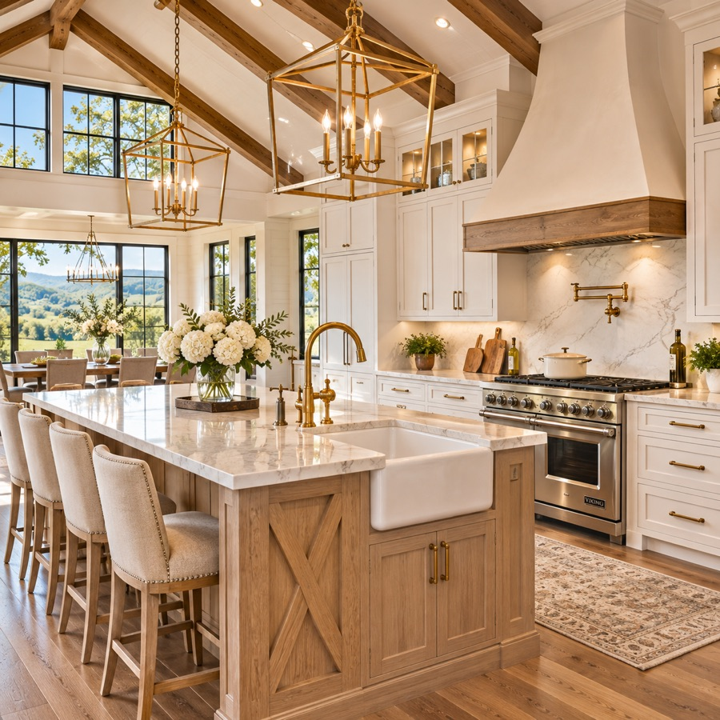
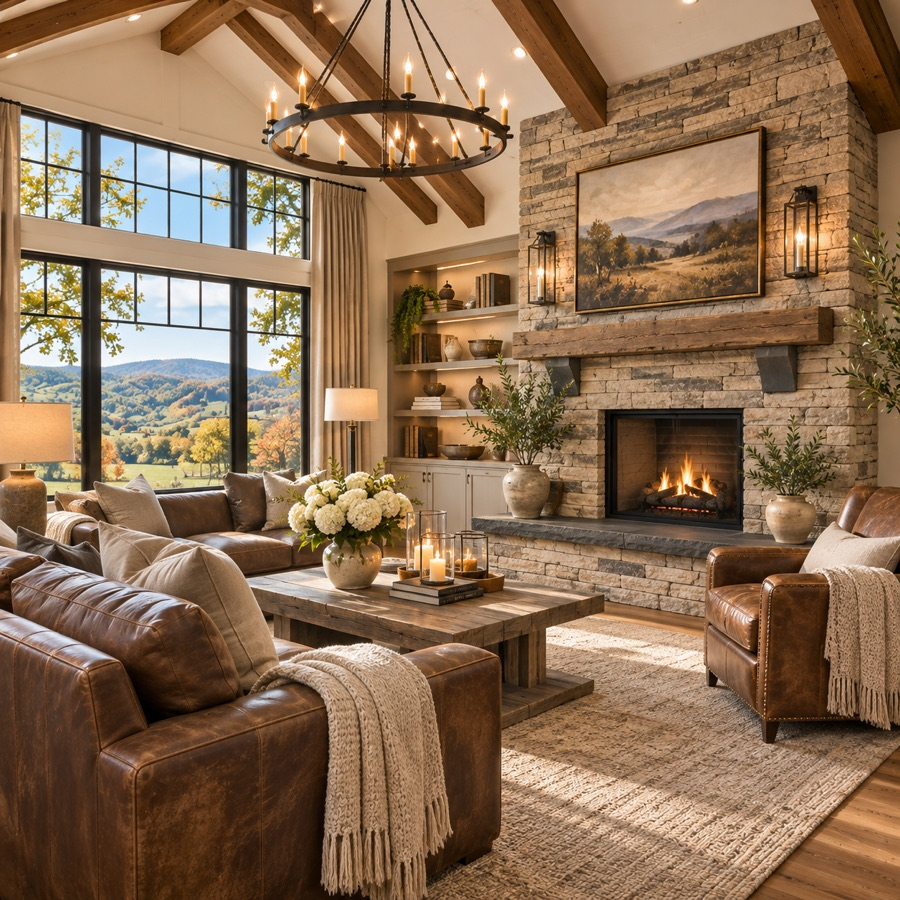

Services
Seller representation
Pricing strategy, professional photography, twilight and drone video, staging consultation, and a marketing plan built for luxury buyers.
Buyer representation
Private showings, new-construction walkthroughs, builder negotiations, inspections and closing coordination.
New construction on acreage
Homes built 2023 and later on lots of one acre or more, from Leiper's Fork edges to Brentwood estates.
Relocation to Williamson County
Neighborhood tours, school-district information from official sources, and a moving timeline that fits your family's schedule.
Why clients choose Claire
Local and responsive
Claire lives in Franklin and answers calls and texts the same day.
Design-minded
She knows modern construction: materials, layouts, energy features and the builders behind them.
Marketing that shows the land
Every listing gets aerial video so buyers see the lot, the views and the light.
About Claire Whitfield
Claire Whitfield founded Crestline Realty after a decade in residential design. She pairs a designer's eye with careful negotiation, and she believes a great home sale starts with telling the story of the house and the land around it.
Our values
Honesty in pricing. Clear communication. Respect for every client's time. Equal treatment for every buyer and seller.
Our homes


Contact
Claire Whitfield, REALTOR®
Phone: (615) 555-0142 · Email: claire@crestline-realty.example
Serving Franklin, Brentwood and greater Williamson County, Tennessee.
Hours: Monday–Saturday 8 AM–7 PM · Sunday by appointment